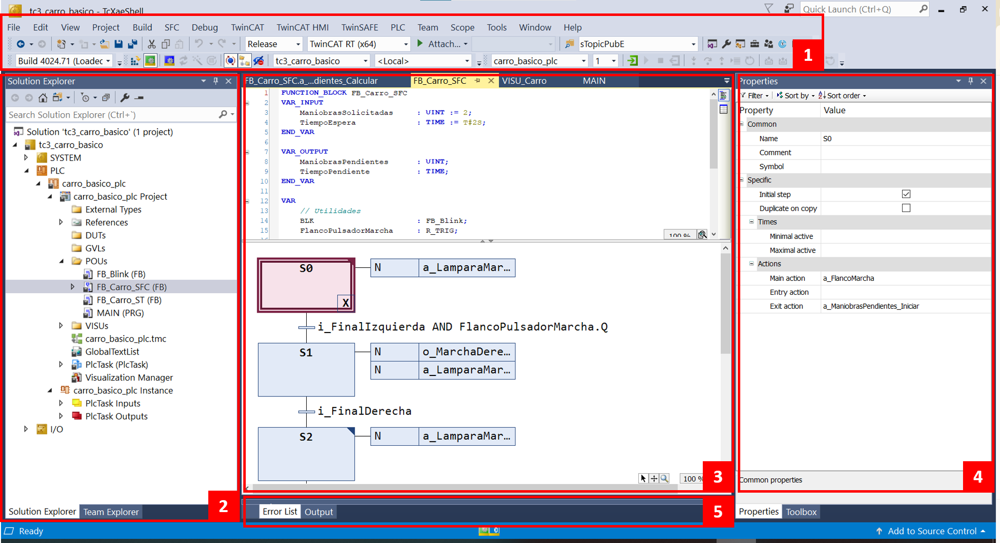
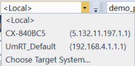
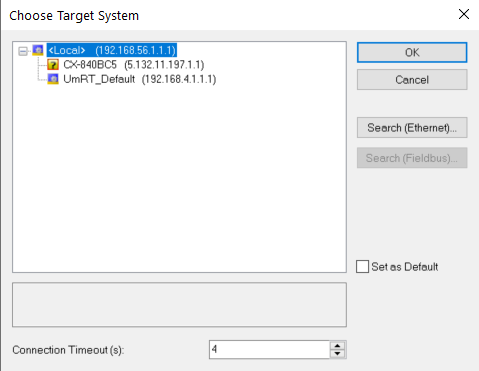
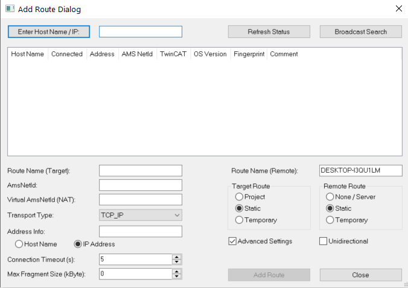
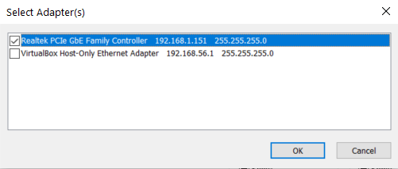
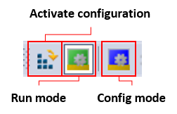
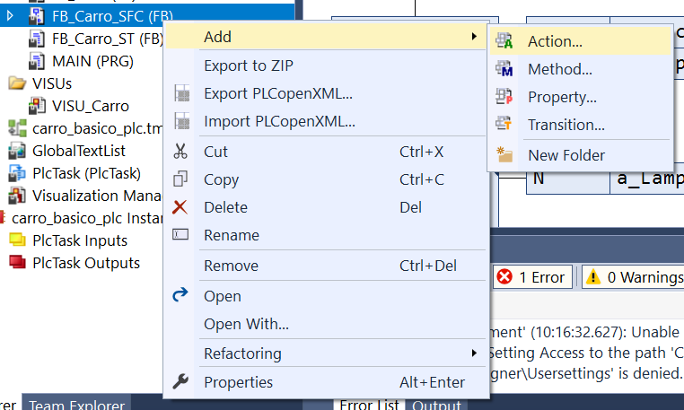
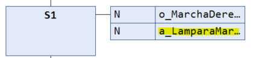
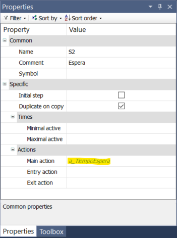
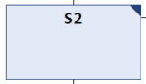

✔ Conceptos generales¶
Leyenda
| Abrev. | Significado |
|---|---|
| CD | Clic derecho del ratón |
| CI | Clic izquierdo del ratón |
| DCI | Doble clic izquierdo del ratón |
| TC3 | TwinCAT3 |
| CV | Campus Virtual |
| FB | Bloque funcional (Functional Block) |
Interfaz de TwinCAT 3¶
La imagen muestra el entorno de desarrollo TwinCAT 3 (TcXaeShell) integrado en Visual Studio. A continuación se describen las principales zonas de la interfaz:

Resumen estructural¶
La interfaz de TC3 se divide conceptualmente en:
| Zona | Función |
|---|---|
| Barra superior | Control del proyecto y del runtime |
| Solution Explorer | Organización estructural del proyecto |
| Editor central | Declaración de variables (superior) y código (inferior) |
| Panel de propiedades | Configuración detallada |
| Ventana inferior | Diagnóstico y mensajes |
1. Menús y barra de herramientas¶
En la zona superior encontramos:
Barra de menús¶
Incluye los menús clásicos:
- File
- Edit
- View
- Project
- Build
- Debug
- TwinCAT
- etc.
Desde aquí se gestionan acciones globales como compilar, activar configuración, depurar o configurar el runtime.
Barra de herramientas¶
Debajo del menú aparecen accesos rápidos a:
- Selección de configuración (Debug / Release)
- Selección del controlador (por ejemplo
) - Botones de Activar configuración, Run Mode, Config Mode, Login, Start, Stop
- Selección del proyecto activo
- Acceso rápido a escritura y forzado de variables, reset del controlador, etc.
2. Solution Explorer¶
Es el árbol estructural del proyecto.
Aquí se organizan:
- Solution
- Proyecto PLC
- POUs (Program Organization Units)
- DUTs (Tipos de datos)
- GVLs (Variables globales)
- Visualizaciones
- Referencias
- I/O
- Tasks
Permite:
- Crear nuevos bloques (FB, PRG, etc.)
- Añadir tipos de datos
- Configurar hardware
- Gestionar instancias
Es el centro de navegación del proyecto.
3. Editor central¶
Zona central del trabajo. Es el área donde se edita el código y los diagramas.
Puede mostrar distintos tipos de editores:
- Structured Text (ST)
- Ladder (LD)
- FBD
- SFC
- Visualizaciones
En la imagen se observan dos zonas diferenciadas dentro del mismo bloque:
Declaración de variables (parte superior)¶
Aquí se definen:
VAR_INPUTVAR_OUTPUTVAR- Enumeraciones
- Instancias de bloques
- Variables mapeadas a entradas/salidas físicas
Es la zona donde se define la interfaz y memoria del bloque.
Zona de código (parte inferior)¶
Aquí se implementa el código del bloque. En el ejemplo se visualiza un diagrama SFC con:
- Pasos (
S0,S1,S2...) - Transiciones
- Acciones asociadas
- Condiciones lógicas
Pero se puede programar en cualquier lenguaje de la norma IEC-61131-3.
4. Ventana de Propiedades¶
Muestra las propiedades del elemento seleccionado:
- Nombre
- Comentario
- Paso inicial
- Acciones asociadas
- Tiempos mínimos o máximos
- Configuración específica del objeto
Es contextual: cambia según lo que esté seleccionado (paso SFC, variable, bloque, etc.).
5. Zona inferior (Output / Error List)¶
En la parte inferior aparecen pestañas como:
- Error List
- Output
- Estado de compilación
Sirve para:
- Ver errores de compilación
- Advertencias
- Mensajes del sistema
- Información de activación
🏗️ Crear soluciones en TC3¶
Crear proyecto TC3¶
- Abrir el software
Twincat XAE Shell, desde el menú Inicio de Windows o desde el icono de la barra de programas en segundo plano que hay abajo a la derecha en la barra de tareas. -
Seleccionar New TwinCAT Project.

-
Seleccionar el tipo TwinCAT XAE Project (XML format).

-
Darle un nombre a la Solución, y seleccionar su ubicación (la que viene por defecto está bien). Dejar marcada la opción Create directory for solution.

Ejemplo
TC3_Lampara -
Por defecto, tanto la Solución de Visual Studio como el proyecto de TC3 tendrán el mismo nombre.
Recomendación
Ocultar las secciones del proyecto que no se van a utilizar: MOTION, SAFETY, C++, VISION, ANALYTICS.
Nos quedaremos solo con SYSTEM, PLC e I/O.
Crear proyecto PLC¶
- Una vez creado un proyecto de TC3, procedemos a crear un proyecto PLC.
- Hacer CD sobre la sección
PLCy seleccionar Add New Item. -
Seleccionar Standard PLC Project, darle un nombre y pulsar Add.

Ejemplo
Lampara_PLC -
En la sección de
SYSTEM > Tasksaparecerá por defecto una nueva tareaPLC Taskcon sus parámetros por defecto (ej. 10 ms de ciclo). -
En la sección
PLCaparece el proyecto con dos secciones nuevas:-
ProjectExternal Types. Almacena definiciones de tipos de datos externos que provienen de fuentes externas al PLC.References. Listado de referencias a las librerías utilizadas en el proyecto.DUTs. Tipos de Dato de Usuario (Data User Types) (ENUM,STRUCT).GVLs. Listas de Variables Globales (Global Variables Lists).POUs. Unidades de Organización del Programa (Program Organization Units). Programas, bloques funcionales y funciones que implementaremos.VISUs. Visualizaciones creadas.-
Tarea creada (
PLCTask) y programaMAIN
-
Instance. Aquí aparecerán las variables en las imágenes de Entrada y Salida.
-
-
A partir de aquí se puede empezar a implementar el proyecto.
Crear bloque funcional¶
- Hacer CD sobre la sección
POUs. - Seleccionar
Add → POU → Functional Block. - Darle un nombre significativo.
- Seleccionar el lenguaje a utilizar. Normalmente utilizaremos
SToSFC.
🏷️ Declaración de variables¶
Recomendación
Se recomienda utilizar la convención CamelCase para declarar las variables.
Como convención adicional, añadiremos un prefijo i_ para aquellas variables que se declaren en la zona de entrada y o_ para las de la zona de salida.
- Independientemente del lenguaje utilizado para implementar el código, las variables se declaran de la misma manera.
- Las variables se declaran en la caja superior de la ventana del bloque funcional creado.
- La sintaxis para la declaración de variables es la siguiente:
<NombreVariable> : <tipo> [:=<ValorInicial>]
Los tipos de datos más utilizados son los siguientes:
| Tipo de dato | Descripción |
|---|---|
BOOL |
Variable booleana/binaria. Solo puede valer TRUE o FALSE. |
INT |
Entero con signo de 16 bits (-32768 a 32767). |
UINT |
Entero sin signo de 16 bits (0 a 65535). |
FLOAT |
Número real en coma flotante (32 bits). Permite decimales. |
TIME |
Tipo de dato para representar tiempos o duraciones. |
R_TRIG |
Bloque de función para detectar flanco ascendente (FALSE → TRUE). |
TON |
Temporizador a la conexión (retardo a la activación). Activa la salida tras un tiempo. |
ARRAY[x..y] OF ... |
Conjunto de variables del mismo tipo indexadas entre x e y. |
Ejemplo
// bool
Pulsador: BOOL;
LuzAmarilla: BOOL := TRUE;
// enteros con y sin signo
Altura: INT;
Contador: UINT;
UnidadesSolicitadas: UINT := 10;
// números reales
TpoSegundos: FLOAT := 1.2;
// tiempo
TiempoEspera: TIME := T#2s;
TiempoRestante: TIME;
// bloques funcionales
Flanco_Pulsador: R_TRIG; // detector de flanco (estándar)
Temporizador: TON; // temporizador (estándar)
Coordinador: FB_Coordinador; // bloque funcional definido por el usuario
// arrays
Ocupado: ARRAY[0..3] OF BOOL; // array de cuatro elementos de tipo BOOL; acceso con []
-
La sintaxis de los valores posibles es la siguiente:
- Variables booleanas:
TRUE,FALSE. - Variables enteras:
0,1, etc. - Variables reales:
0.1,2.3, etc. -
Variables de tiempo:
T#<tiempo>donde<tiempo>debe ser del estilo<numero><unidad>, siendo<unidad>escogido de{s, ms}.Ejemplo
T#2s(dos segundos)T#500ms(quinientos milisegundos). -
El acceso a los arrays se hace con el índice entre corchetes.
Ejemplo
Ocupado[1] := TRUE;
- Variables booleanas:
-
Ejemplos de llamadas a los bloques funcionales estándar:
Ejemplo
Detector de flanco: Se activa su salida
Flanco_Pulsador.Qcuando la señalbotonpasa deFALSEaTRUE.Flanco_Pulsador(CLK := boton);Ejemplo
Temporizador: Se activa cuando la señal
startpasa aTRUEy activa su salidaTemporizador.Qtras pasar 10s.Temporizador(IN:=start, PT:=T#10s);
Las variables en TC3 se declaran dentro de los ámbitos existentes en el POU correspondiente: locales, entrada y salida.
Variables locales¶
FUNCTIONAL_BLOCK FB_Estacion
VAR
Contador: UINT;
END_VAR
Las variables declaradas aquí se pueden utilizar dentro del POU pero no pueden tomar valores de fuera del POU ni se pueden acceder desde fuera del POU.
Variables de entrada¶
FUNCTIONAL_BLOCK FB_Estacion
VAR_INPUT
TiempoEntrada: TIME;
TiempoSalida: TIME := T#2s;
END_VAR
Las variables declaradas aquí deben ser especificadas al llamar al FB (a no ser que se les de un valor por defecto).
Importante
No especificarlas en la llamada produce un error de compilación.
Variables de salida¶
FUNCTIONAL_BLOCK FB_Estacion
VAR_OUTPUT
LuzAmarilla: BOOL;
LuzVerde: BOOL;
END_VAR
Las variables declaradas aquí pueden ser accedidas desde fuera del FB (por ejemplo, desde otro FB que llama a este, o desde el programa MAIN).
PROGRAM MAIN
VAR
Estacion: FB_Estacion
LuzAmarillaEstacion: BOOL;
END_VAR
------------------
LuzAmarillaEstacion := Estacion.LuzAmarilla; // esto es válido
Importante
Querer acceder a una variable de un FB que no ha sido declarada como salida produce un error de compilación.
Variables de entrada y salida¶
FUNCTIONAL_BLOCK FB_Estacion
VAR_IN_OUT
Contador: UINT;
END_VAR
Este ámbito no aparece por defecto al crear un FB pero puede ser añadido simplemente escribiendo la sección VAR_IN_OUT ... END_VAR.
Las variables declaradas aquí deben tomar un valor como entrada al FB y su valor final tras cada ciclo puede ser accedido desde fuera del FB.
Combina las condiciones de los ámbitos de entrada y salida.
- En un programa (ej.
MAIN) sólo disponemos del ámbitoVAR. - En un FB, además del ámbito
VAR, disponemos de los ámbitosVAR_INPUTyVAR_OUTPUT.
Variables vinculadas a la E/S¶
Recuerda que la memoria del PLC está estructurada en tres secciones: la imagen de entrada, la imagen de salida y la zona de marcas.
Zona de marcas¶
Aquí se guardarán aquellas variables que son internas al programa y no van a ser vinculadas con terminales de entrada y salida.
Las variables declaradas con la siguiente sintaxis se guardan en la zona de marcas:
VAR
Pulsador: BOOL;
Contador: UINT;
Lampara: BOOL;
END_VAR
Imagen de entrada¶
Aquí se guardarán las variables que queremos vincular a las entradas físicas del sistema.
Su sintaxis añade AT %I* antes de la definición del tipo:
VAR
i_Pulsador AT %I*: BOOL;
END_VAR
Importante
En nuestro trabajo usaremos la convención de añadir un prefijo i_ delante de estas variables.
Imagen de salida¶
Aquí se guardarán las variables que queremos vincular a las salidas físicas del sistema.
Su sintaxis añade AT %Q* antes de la definición del tipo:
VAR
o_Lampara AT %Q*: BOOL;
END_VAR
Importante
En nuestro trabajo usaremos la convención de añadir un prefijo o_ delante de estas variables.
Importante
Declarar una variable en la imagen de entrada o salida es independiente de que sean entradas o salidas del bloque funcional.
Estas declaraciones son completamente correctas.
VAR_INPUT
Pulsador AT %I*: BOOL;
LamparaAmarilla AT %Q*: BOOL;
TiempoEspera: TIME;
END_VAR
VAR
LamparaMarcha AT %Q*: BOOL;
END_VAR
VAR_OUTPUT
PresenciaPale AT %I*: BOOL;
END_VAR
🖥️ Crear visualización¶
-
Hacer CD sobre la sección
VISUs. -
Seleccionar
Add → Visualizationy pulsar en Open en la ventana popup.
-
En la parte derecha de la pantalla aparecerá la sección
Toolboxdonde, en la secciónBasicaparecen las formas básicas. Arrastrar a la visualización los elementos que se quieran.
Importante
Si no aparece la sección, mostrarlo entrando en el Menú View → Toolbox
Recomendación
Se recomienda utilizar rectángulos para crear botones tanto para las entradas como para las salidas.
Botones para cambiar valores de variables¶
-
Dibujar un rectángulo con el tamaño deseado.
-
Escribir dentro la etiqueta que queramos que aparezca en el botón.
-
Introducir la variable de tipo
BOOLque queremos asociar a dicho botón. Dependiendo del comportamiento que queramos que tenga el botón, esta variable se introduce en una sección distinta dentro deProperties → Input Configuration(la pestañaPropertiesaparece a la derecha, normalmente combinada conToolbox).-
Si queremos que la variable cambie de valor mientras se pulsa el botón con el ratón pero vuelva a su valor anterior una vez soltado el ratón, introduciremos la variable en la sección
Tap:
-
Si queremos que la variable cambie de valor cada vez que pulsemos el botón lo introduciremos en la sección
Toggle(el valor conmutará entreTRUEyFALSE):
-
▶️ Ejecutar programa¶
Una vez el programa está implementado (independientemente del lenguaje utilizado):
- Compilar el proyecto: Menú
Build → Build [nombre del proyecto]. - Asegurarse de que no hay errores.
- Si has declarado variables en las imágenes de entrada y/o salida:
- Comprobar que las variables aparecen en la zona de la instancia.

- Comprobar que las variables aparecen en la zona de la instancia.
Seleccionar el controlador¶
El programa puede ser ejecutado en distintos "controladores"
- Emulador
Local. - Simulador
Um_RT(User Mode Real Time). Recomendado para el laboratorio. - Controlador remoto (PLC).
Emulador local¶
Para poder usar este controlador debemos haberle dejado a TwinCAT 3 que tuviera acceso al kernel de Windows durante la instalación, de manera que pueda hacer uso de, al menos, un core del equipo para ejecutar el programa.
El emulador local ejecuta el programa exactamente de la misma manera que si lo hiciéramos en un equipo remoto pero, obviamente, no tenemos acceso al hardware. De esta forma, podremos interactuar con las variables de entrada y salida mediante la escritura/forzado de variables o usando la visualización (si hemos diseñado alguna para controlar las variables).
En este caso no tendremos que asociar las variables a los terminales de E/S ya que no habrá ninguno disponible.
Para usar este controlador, simplemente asegúrate de seleccionar Local en el desplegable del Target.

Importante
La instalación y uso de este modo tiene ciertos requisitos que se cumplen en la mayoría de los equipos en los que se puede instalar, pero, en ocasiones, puede dar algún problema de incompatibilidad. Para estos casos, se recomienda utilizar el simulador local explicado más adelante.
Simulador local¶
TwinCAT 3 proporciona una vía alternativa al emulador local que permite ejecutar código en un simulador en "modo usuario" dentro de Windows. La diferencia principal con el emulador es que éste garantiza el tiempo de ciclo del sistema mientras que el simulador no lo hace. Aún así, las restricciones de tiempo de los programas que usaremos no son muy exigentes así que el simulador será suficiente para una ejecución satisfactoria. A cambio, elimina los problemas de compatibilidad que la instalación del emulador local pueda tener.
Al igual que con el emulador local, no tendremos que asociar las variables a los terminales de E/S, ya que no habrá ninguno disponible. De nuevo, podremos interactuar con las variables de entrada y salida mediante la escritura/forzado de variables o usando la visualización (si hemos diseñado alguna para controlar las variables).
Para usar este controlador, tendremos que ejecutar en "modo Administrador" el archivo TC3_UmRT_Start.bat que proporcionamos en la carpeta Automatización > programas del CV. Esto abrirá un terminal de Windows con la información relativa a la ejecución del simulador. Minimizaremos esta ventana y la dejaremos trabajar de fondo.
Error
Se ha detectado que este procedimiento no funciona en los PCs del laboratorio por lo que, alternativamente, hay que realizar lo siguiente:
Pulsar Win+R e introducir el siguiente texto:
C:\TwinCAT\3.1\Runtimes\UmRT_Default\Start.bat
Importante
No debemos cerrar la ventana del terminal de Windows abierto por TC3_UmRT_Start.bat mientras queramos usar este simulador.
Una vez hecho esto, aparecerá el texto UmRT_Default en el desplegable del target:

Importante
Una vez finalizado nuestro trabajo con el simulador, pulsaremos la tecla 'x' en el terminal para apagar el simulador y se cerrará automáticamente la ventana.
Controlador remoto (PLC)¶
Por último, podremos ejecutar nuestro programa en un controlador remoto (por ejemplo, el PLC de alguna de las estaciones). De esta manera, tendremos acceso al hardware que esté conectado al controlador y podremos interactuar con él.
Importante
En este punto, asumiremos que ya hemos encontrado el controlador en la red del laboratorio (como se explica aquí y ya hemos escaneado los terminales de E/S que están conectados al controlador (como se explica aquí).
Para usar este controlador, lo seleccionaremos en el desplegable de Target.
Al usar este controlador, tendremos acceso al hardware conectado a él, y podremos vincular las variables que hemos declarado en las imágenes de entrada y salida con los terminales y canales que queramos. Para ello, simplemente repetiremos este proceso para cada variable:
-
DCI sobre la variable a vincular en la lista que aparece en la sección de instancia del proyecto.
-
Seleccionar el terminal/canal deseado del listado que aparece.
Activar la configuración¶
Una vez realizada la selección del controlador y la asociación de variables con los terminales de E/S (si procede), ahora debemos envíar esta información al controlador en cuestión. Esto se denomina Activar la configuración.
Para ello, deberemos pulsar el icono de Activate Configuration y activar el modo de ejecución (Run Mode) cuando nos lo pregunte TwinCAT3 en una ventana popup.

Transferir y ejecutar el programa¶
Posteriormente, debemos enviar el programa al controlador pulsando el icono de Login, tras lo que se preguntará, en un popup, si queremos crear un puerto de comunicación con el controlador y descargar el programa. Pulsaremos en Yes.

Finalmente, pondremos el programa en ejecución pulsando el icono Start.

Importante
Para poder modificar de nuevo el programa, primero hay que parar el programa (Stop) (recomendado) y posteriormente hacer Logout.

🌐 Búsqueda de controladores remotos¶
Recomendación
Hay un video de ejemplo en el Campus Virtual en Automatización > Videos > TC3 con nombre 9_Runtime_Target_*.mkv.
En esta sección explicaremos cómo buscar controladores remotos en la red del laboratorio y cómo escanear los terminales/canales que tienen conectados.
Búsqueda en red¶
Si queremos utilizar un controlador remoto (PLC), lo primero que debemos hacer es buscarlo en la red local del laboratorio y establecer una conexión con él. Para ello, seguiremos este procedimiento:
-
Desplegar
Targety seleccionarChoose Target System....
-
Pulsar sobre
Search (Ethernet)Importante
Aceptar si aparece el siguiente mensaje: Searching for remote system only possible from local system. Change back to local system.
-
Se abre el siguiente cuadro de diálogo:

-
Seleccionar
🔳 Advanced Settings. -
Pulsar sobre el botón
Broadcast Search.-
Seleccionar los adaptadores de red en el popup.

-
-
Seleccionar el PLC de la lista que aparezca.
- Marcar
🔳 IP Address - Pulsar en el botón
Add Route. - En el popup que aparece (Add Remote Route):
- Deseleccionar
🔲 Secure ADS - Escribir:
Userel que corresponda (Administrator, por defecto). - Escribir:
Passwordla que corresponda (1, por defecto).
- Deseleccionar
- Observar que aparece una
xen la columna Connected. - Cerrar el cuadro de diálogo pulsando
Close.
-
-
Ahora debería aparecer el controlador en el listado del cuadro de diálogo
Choose Target System:- Seleccionar el controlador en la lista y pulsar
OK.
- Seleccionar el controlador en la lista y pulsar
- Si aparece un popup indicando que es necesario cambiar la plataforma, pulsar en
Yes.
-
Escaneado del controlador¶
Importante
Para poder hacer este proceso, debemos asegurarnos que TwinCAT 3 está en modo configuración (Configuration Mode) y no en ejecución (Run Mode).

Comenzamos por buscar los dispositivos de entrada/salida conectados al controlador. Para ello:
-
En el explorador de la solución (
Solution Explorer):- Seleccionar:
I/O > Device. - Pulsar en el menú
TwinCAT > Scan (BD Scan)(alternativamente, CD sobreI/O Devicey pulsarScan). - Aceptar el mensaje de que no todos los dispositvos pueden encontrarse automáticamente.
- Seleccionar únicamente el dispositivo EtherCAT y pulsar
OK. - Aceptar la búsqueda de boxes (terminales) pulsando
Yes. - Aceptar la activación del modo Free Run pulsando
Yes.
- Seleccionar:
-
Observar el arbol de I/O en el explorador de la solución.
-
Desplegar el elemento
EK1200y verificar que la lista de terminales se corresponde con la configuración del controlador (en su documentación).Info
Tened en cuenta que el terminal
EL9011es un elemento virtual.
Comprobación de los terminales¶
Ahora vamos a comprobar alguno de los terminales de E/S para asegurarnos de que tenemos acceso a ellos. Usaremos un ejemplo en el que tendremos un programa con una variable de entrada i_PulsadorMarcha y una variable de salida o_LamparaMarcha.
El procedimiento a seguir es el siguiente:
-
Buscar en el listado de E/S del controlador la entrada correspondiente al pulsador de marcha:
- Localizar el Terminal y el Canal de entrada especificado.
- Desplegar el contenido del Canal y hacer DC sobre su
Input. - Seleccionar la pestaña Online y verificar que se corresponde con el pulsador:
- Accionar el pulsador de marcha y observar el cambio de valor mostrado en la gráfica.
Importante
Se recomienda seleccionar la pestaña Variable y cambiar el nombre de
Inputpor el nombre de la variable asociada en el listado de E/S (por ejemplo,i_PulsadorMarcha).Este paso NO vincula el terminal/canal con la variable sino que simplemente lo renombra para ayudarnos a localizarlo posteriormente durante el proceso de vinculación.
-
Buscar en el listado de E/S del controlador la salida correspondiente a la lámpara de marcha:
- Localizar el Terminal y el Canal de salida especificado.
- Desplegar el contenido del Canal y hacer DC sobre su
Output. - Seleccionar la pestaña Online y verificar que se corresponde con la lámpara:
- Pulsar
Write. - Pulsar alternativamente
0/1y comprobar que la lámpara se enciende y se apaga.
- Pulsar
Importante
Se recomienda seleccionar la pestaña Variable y cambiar el nombre
Outputpor el nombre de la variable asociada en el listado de E/S (por ejemplo,o_LamparaMarcha).Este paso NO vincula el terminal/canal con la variable sino que simplemente lo renombra para ayudarnos a localizarlo posteriormente durante el proceso de vinculación.
Una vez realizado esto, guardamos el proyecto.
🔗 Vinculación de variables y E/S¶
Recomendación
Hay un video de ejemplo en el Campus Virtual en Automatización > Videos > TC3 con nombre 9_Runtime_Target_*.mkv.
Una vez se han revisados y renombrados los terminales/canales de E/S del controlador, procedemos a vincularlos con las variables de nuestro programa.
El procedimiento es el siguiente (siguiendo con el ejemplo anterior de pulsador/lámpara):
- DC sobre el canal nombrado como
o_LamparaMarcha(DB > Change Link...):- Seleccionar la variable que queremos vincular
MAIN.o_Lamparaen la instanciaPLCTask Inputy pulsarOK.- Observar cómo cambian los iconos del canal
o_LamparaMarchay de la variableMAIN.o_Lamparaen la instancia (aparece una flecha sobre el icono en ambos casos, indicando que hay una vinculación).
- Observar cómo cambian los iconos del canal
- Seleccionar la variable que queremos vincular
-
DC sobre la variable
MAIN.i_Pulsadoren la instanciaPLCTask Input(DB > Change Link...)- Seleccionar en I/O el canal correspondiente a i_Pulsador
- De la misma manera, cambian los iconos del canal
o_LamparaMarchay de la variableMAIN.o_Lamparaen la instancia.
- De la misma manera, cambian los iconos del canal
Info
Esta operación se puede hacer desde la instancia hacia la entrada/salida o al revés.
- Seleccionar en I/O el canal correspondiente a i_Pulsador
🔌 Activar/desactivar hardware¶
- Si has vinculado las variables de tu programa con el equipo remoto (hiciste la búsqueda del equipo remoto y la exploración de los módulos de E/S), cuando quieras probar tu programa en el Runtime Local, aparecerá una ventana popup indicando un error.
- Esto se debe a que TC3 quiere establecer conexión con el hardware al que estuviste conectado pero no puede, ya que el
Targetes el local. - Para evitar esto, solo tienes que deshabilitar el hardware haciendo CD sobre el dispositivo buscado y seleccionar Disable.
Importante
Recuerda volver a habilitarlo cuando quieras volver a usar el equipo remoto.
👫 Creación de DUTs¶
Además de los tipos de datos simples (BOOL, INT, etc.) y los bloques funcionales ya existentes (R_TRIG) o creados por nosotros (FB_Coordinador_ST), en ocasiones podemos necesitar crear tipos de dato que están compuestos por otros tipos de dato. A estos tipos de datos se les denomina tipos de unidad de datos (Data Unit Type, DUT).
En nuestros proyectos vamos a poder hacer uso de dos de ellos:
- Estructuras (
STRUCT) - Enumeraciones (
ENUM).
Estructuras¶
Aglutinan en su interior otros tipos de dato y se definen haciendo CD sobre la carpeta DUTs y escogiendo Add → DUT:

Se le da un nombre significativo (se recomienda comenzar con ST como, por ejemplo, ST_PIEZA), se deja marcado Structure y se pulsa en Open.
Se abrirá una ventana de texto para definir los componentes del tipo de dato:
TYPE ST_PIEZA :
STRUCT
Blanca: BOOL;
Baja: BOOL;
Tamano: INT;
Tiempo: TIME;
END_STRUCT
END_TYPE
Para usarlo, se define una variable de ese tipo y se accede a sus componentes mediante el operador . (punto):
// Definicion de variables
VAR
Pieza: ST_PIEZA;
Baja: BOOL;
END_VAR
--------------------------------
// Implementacion
Pieza.Blanca := TRUE;
Baja := (Pieza.Tamano < 12);
Pieza.Tiempo := T#1s;
Enumeraciones¶
Una enumeración (ENUM) es un tipo de datos definido por el usuario compuesto por una serie de componentes separados por comas, también llamados valores de enumeración, que se utiliza para declarar variables definidas por el usuario.
Se definen haciendo CD sobre la carpeta DUTs y escogiendo Add → DUT:
Se le da un nombre significativo (se recomienda comenzar con E como, por ejemplo, E_ColorBasic), se deja marcado Enumeration y se pulsa en Open.
Se abrirá una ventana de texto para definir los componentes del tipo de dato:
{attribute 'qualified_only'}
{attribute 'strict'}
TYPE E_ColorBasic :
(
eRed,
eYellow,
eGreen,
eBlue,
eBlack
) // Basic data type is INT, default initialization is eRed
;
END_TYPE
Una variable definida con el tipo E_ColorBasic es, en realidad, de tipo INT y solo puede tomar los valores definidos en E_ColorBasic: eRed, eYellow, etc.
Cada uno de esos valores tiene un valor INT asociado, comenzando por el cero: eRed = 0, eYellow = 1, etc.
Para usarlo, se define una variable de ese tipo y se le asigna el valor deseado usando el nombre del tipo de dato Enumeration:
// Definicion de variables
VAR
Color: E_ColorBasic;
END_VAR
--------------------------------
// Implementacion
Color := E_ColorBasic.eYellow; // asignacion de valor
IF Color <> E_ColorBasic.eRed THEN // comprobacion de valor
[...]
END_IF
Declaración compacta¶
Importante
Este método se utiliza si el tipo va a ser utilizado solo en un mismo POU. Si se pretende utilizar el tipo enumerado declarado en más de uno, es más conveniente declararlo como DUT siguiendo el procedimiento anterior.
Existe otra manera más compacta de declarar una variable de tipo Enumeration. Para ello, basta con declarar el nombre de la variable y los posibles valores que puede tomar.
VAR
Estado : (E_Reposo, E_MarchandoDerecha, E_MarchandoIzquierda);
END_VAR
📄 Lenguaje ST¶
Recomendación
Es recomendable acceder a la ayuda y documentación del lenguaje ST (Structured Text) que ofrece Beckhoff en su portal Infosys.
Sintaxis general¶
- Las instrucciones deben terminar con
;. - Los comentarios se pueden realizar con
//hasta final de línea o metiendo el texto entre(*y*). - La asignación de valores entre variables se realiza con el operador
:=. - La comparación de valores se realiza con los operadores
=,<>,<=,>=. - Las operaciones lógicas se realizan con los operadores
AND,ORyNOT. - La llamada a los FBs se realiza escribiendo el nombre de la instancia del FB seguido de, entre paréntesis, las asignaciones de los valores para las variables de entrada (si las hay), separadas por comas:
<nombre_instancia>(var1:=val1, var2:=val2, ...); -
En caso de que no haya ninguna variable de entrada que especificar, simplemente se abre y se cierra paréntesis.
Ejemplo
Estacion();Lampara(TiempoEncedido:=T#2s);
Estructuras de control¶
- Las estructuras de control básicas son:
- Condicionales (
if,case)IF <condition> THEN <statements> ELSIF <condition> THEN <statements> ELSE <statements> END_IF; CASE <expression> OF <value>, <value>, …, <value>: <statements> ELSE <statements> END_CASE; - Bucles (
for,while,repeat)FOR <variable> := <expression> TO <expression> BY <expression> DO <statements> END_FOR; WHILE <condition> DO <statements> END_WHILE; REPEAT <statement> UNTIL <condition> END_REPEAT;
- Condicionales (
⤵️ Lenguaje SFC¶
Reglas sintácticas¶
- Los nombres de las etapas en SFC (Sequential Function Chart) no pueden empezar por un número. Tampoco pueden tener espacios, puntos u otros caracteres especiales como eñes, interrogaciones, etc. Sí permite guiones bajos.
- No puede haber dos etapas consecutivas ni dos transiciones consecutivas. Hay que tener especial atención a esto cuando se produzcan bifurcaciones o saltos.
Añadir etapa / transición¶
- Hacer CD sobre la etapa donde queramos introducir una nueva y seleccionar Add step-transition o Add step-transition after, dependiendo de si queremos añadirla antes o después, respectivamente, de la etapa seleccionada.
Importante
Comprobar que no quedan dos etapas o dos transiciones consecutivas. En caso contrario, borrar aquello que no sirva (CI sobre él y pulsar Supr).
Asociar acciones a etapas¶
Acción continua¶
Las acciones continuas se ejecutan de manera continuada mientras el sistema está en la etapa asociada. Esto nos va a permitir:
- Activar una señal booleana durante todo el tiempo que la etapa esté activa.
- Ejecutar una acción más compleja asociada al FB de manera continua mientras la etapa esté activa.
El procedimiento para su creación es el siguiente:
- Hacer CD sobre la etapa a la que queramos asociar una acción no memorizada (o continua) y seleccionar Insert action association o Insert action association after, dependiendo de si queremos insertarla antes o después de las ya existentes (si las hay).
- En la caja de la acción aparece en primer lugar el modificador (por defecto
N, que significa "No memorizada") y en segundo lugar el hueco donde debemos poner la acción a realizar.
Señal booleana¶
Si queremos activar una señal booleana, bastará con escribir su nombre en la caja de acción.

Existen varios tipos de modificadores de acciones:
| Código | Tipo | Descripción |
|---|---|---|
N |
No memorizada (continua) | Se ejecuta/activa mientras la etapa esté activa. |
R0 |
Reinicio | La acción se desactiva. |
S0 |
Activación | Se ejecuta cuando se activa la etapa y continúa activa aunque la etapa se desactive. |
L |
Limitada | Se ejecuta cuando se activa la etapa y se desactiva cuando la etapa se desactiva o se alcanza el tiempo especificado. |
D |
Retrasada | Se ejecuta un tiempo después de que se active la etapa y se desactiva cuando la etapa se desactiva. |
P |
Pulsada | Se ejecuta dos veces: cuando se activa la etapa y una vez más en el ciclo siguiente. |
SD |
Activación con retardo | Se activa aunque la etapa ya no esté activa. |
DS |
Retardo de activación | Se activa solo si la etapa permanece activa. |
SL |
Activación limitada | Activación con duración limitada. |
Importante
Usaremos, por defecto, las acciones no memorizadas, aunque se pueden usar las otras si tiene sentido para el proyecto.
Acción compleja¶
Si, por el contrario, lo que queremos asociar a esta etapa es una acción compleja, tendremos que realizar el siguiente procedimiento:
-
Añadir una acción haciendo CD sobre el FB donde queremos usar la acción y seleccionar
Add > Action...
-
Especificar el nombre de la acción que queramos y seleccionar el lenguaje en el que la vamos a implementar.

Sugerencia
En nuestro trabajo tomaremos la convención de añadir el prefijo
a_a las acciones que creemos de este modo. -
Escribir el código de la acción, como por ejemplo:
BLK(); o_LamparaMarcha := (S0.x AND BLK.Q) OR NOT S0.x; -
Asociarlo a una etapa en la caja de acción contínua.

-
A partir de este momento, el código de la acción se ejecutará de manera continua (en cada ciclo básico del PLC) mientras la etapa asociada esté activa.
Acción de entrada o salida¶
También podemos crear acciones con activación a la entrada o a la salida de una etapa. Estas acciones se implementan en cualquiera de los lenguajes de la norma y permiten realizar acciones que se ejecutan solo una vez durante la etapa, en lugar de hacerse de manera continua.
A la entrada¶
- Las acciones con activación a la entrada se ejecutan solo una vez inmediatamente después de entrar en la etapa donde se asocian. Posteriormente se comprueba si la condición de transición para pasar a la siguiente etapa es cierta o no.
- Normalmente usaremos estas acciones para inicializar variables memorizadas, actualizar contadores, etc.
- Para crear una de este tipo, hacer CD sobre la etapa donde la queremos asociar y seleccionar Add entry action.
-
Aparece un popup donde se nos pregunta por el nombre que le queremos poner y el lenguaje a utilizar. Se recomienda dejar el nombre por defecto (
S0_entryen la figura) ya que nos indica en qué etapa está y de qué tipo es.
-
En nuestros proyectos, estas acciones siempre serán implementadas en
ST, pero podrían ser codificadas en cualquier otro lenguaje de la norma. -
Una vez creada, se representa en el programa
SFCcomo un cuadrado con una E en la esquina inferior izquierda de la etapa.
A la salida¶
- Las acciones con activación a la salida se ejecutan solo una vez inmediatamente antes de pasar a la siguiente etapa. Esto implica que antes de que se ejecute esta acción, la condición de transición para pasar a la siguiente etapa debe ser cierta.
- Normalmente usaremos estas acciones para inicializar variables memorizadas, actualizar contadores, etc.
- Para crear una de este tipo, hacer CD sobre la etapa donde la queremos asociar y seleccionar Add exit action.
-
Aparece un popup donde se nos pregunta por el nombre que le queremos poner y el lenguaje a utilizar. Se recomienda dejar el nombre por defecto (
S0_exiten la figura) ya que nos indica en qué etapa está y de qué tipo es.
Importante
En nuestros proyectos, estas acciones siempre serán en
ST, pero podrían ser implementadas en cualquier otro lenguaje de la norma. -
Una vez creada, se representa en el programa
SFCcomo un cuadrado con una X en la esquina inferior derecha de la etapa.

Importante
Nada impide que una etapa tenga asociadas una o varias acciones no memorizadas, una con activación a la entrada y otra con activación a la salida.
Acción principal¶
Existe un cuarto tipo de acciones que podemos utilizar: las acciones principales. Estas acciones también se asocian a una etapa y se ejecutan de manera continua durante todo el tiempo que la etapa esté activa.
El procedimiento de creación de estas acciones es el mismo que el indicado aquí pero, en lugar de introducir el nombre de la acción en la caja de acción, lo introduciremos en el campo Main Action dentro de las propiedades de la etapa.

Una vez asociada a la etapa, aparece representada en el diagrama SFC con un triángulo oscuro en la esquina superior derecha de la misma.

Importante
Conceptualmente no hay diferencia sustancial con las acciones complejas utilizadas en las cajas de acción, pero tomaremos la convención de utilizar este tipo de acciones cuando las variables involucradas no estén relacionadas con las E/S hardware de nuestro sistema y las acciones en la caja de acción en caso contrario.
🔀 Estructuras de evolución¶
Secuencia básica¶
-
Una secuencia básica se compone de una sucesión lineal de etapas y transiciones, donde las primeras se van a ir ejecutando en secuencia conforme las condiciones asociadas a las segundas se vayan cumpliendo.
-
Normalmente, al final de la secuencia se producirá un salto hacia atrás (o el inicio) en el programa.

-
Para insertar un salto detrás de una transición, hay que hacer CD sobre la transición y seleccionar Insert jump after. Solo hay que indicar el nombre de la etapa a la que queremos saltar.
Bifurcación¶
-
Tras una etapa podemos realizar una bifurcación en distintas ramas en función de distintas condiciones. Esto nos permite dirigir la secuencia por un camino si ocurre un evento y por otros distintos si ocurren otros eventos.
-
En el ejemplo de la figura, si la etapa
Initestá activa y se activaExecute, el programa evolucionará por la rama de la izquierda llegando aS0. Si lo que se activa esRestore, el programa evolucionará por la derecha pasando aSry, una vez se activeRestaurado, la secuencia pasará aS0.
-
Para realizar una bifurcación, hacer CD sobre la transición donde se quiera hacer la bifurcación (
Executeen el ejemplo) y seleccionar Insert branch right. -
Nada impide que se pueda hacer una bifurcación con más de dos ramas.
-
Es recomendable que las condiciones de la bifurcación sean excluyentes pero nada impide que no lo sean. El programa tomará el camino de la primera transición cuya condición sea verdadera de izquierda a derecha.
-
Si ocurriera que varias o todas las condiciones son verdaderas a la vez, el programa evolucionará por la rama de la izquierda. Aunque esto puede ser útil en algunos casos, esto suele indicar que hay un mal diseño en el programa.
Paralelismo¶
-
Si queremos que el programa evolucione por dos secuencias en paralelo (se ejecutan simultáneamente) podemos incluir un paralelismo en el código.
-
En el ejemplo de la figura, si la etapa
Initestá activa y se activaExecute, el programa evolucionará por ambas ramas a la vez, activando los estadosS0ySrde manera simultánea (y por tanto,LuzRojayRestaura).
-
En la transición con condición
NOT Pulsador OR S0.t>T#5sse produce un punto de sincronización ya que, para que el programa evolucione aS1debe ocurrir queS0ySr2estén activas y, además, que la condiciónNOT Pulsador OR S0.t>T#5ssea cierta. Por tanto, podemos decir que el programa esperará hasta que termine la rama de la derecha antes de evolucionar.
🔄 Exportar e importar¶
- Podemos exportar
POUsyVISUsdesde una solución de TC3 e importarla de nuevo en otra distinta. De esta manera podemos reutilizar código de distintas proyectos. - Para realizar esto, en la solución origen, simplemente hay que hacer CD sobre el
POUoVISUa exportar y seleccionar Export to ZIP. Se selecciona donde guardar el archivo exportado y se pulsa Save. - Posteriormente, en la solución destino, hacer CD sobre la carpeta
POUoVISUy seleccionar Import from ZIP. Se busca el archivo correspondiente y se pulsa OK.
💾 Guardar y mover proyectos¶
Importante
Se ha detectado que el sincronizar la carpeta del proyecto usando servicios como Google Drive está produciendo problemas a la hora de poder abrir los proyectos. Posiblemente esto se deba a que algunos ficheros no son sincronizados correctamente por Drive (por motivos desconocidos), lo que lleva a que, a la hora de abrir el proyecto, no se carguen los ficheros necesarios.
Se recomienda, por tanto, no usar este método sino alguno de los otros.
Usando la carpeta completa¶
- Es la manera más sencilla de llevarse un proyecto desde un equipo a otro.
-
Solo hay que copiar la carpeta raíz en un pendrive y pegar la carpeta en el equipo destino.

-
Posteriormente, hacer DCI sobre el fichero de Solution (
.sln) para que se abra de nuevo en TC3.
Importante
Si la carpeta ha sido comprimida para ser trasladada, hay que asegurarse de haber descomprimido la carpeta completa en el destino antes de abrir el proyecto.
Guardando como .tnzip¶
Importante
La entrega final del proyecto deberá seguir este procedimiento.
- Este proceso genera el mínimo tamaño posible para trasladar un proyecto.
- Seleccionar
File → Save [nombre_del_proyecto] as Archive.... - Seleccionar dónde guardar el proyecto, darle un nombre y asegurarse de que el formato es de tipo
.tnzip.
Abrir un fichero .tnzip¶
Una vez movido el fichero .tnzip al equipo destino, para volver a abrir el proyecto, seguimos este procedimiento:
- Abrir TC3.
- Seleccionar
File → Open → Solution from Archive.... - Buscar el archivo
.tnzip. - Seleccionar (o crear si no existe) la carpeta donde queremos que se genere la Solution.
Sugerencia
En principio, se puede seleccionar siempre la misma carpeta cada vez que se repita este procedimiento.
Importante
Si al abrir el proyecto de nuevo y compilar obtienes errores no relacionados con el código que antes no tenías:
- Cambiar el tipo de proyecto a TwinCAT RT (x86)
- Recompilar
- Volver a cambiar a TwinCAT RT (x64)
- Volver a recompilar
Usando GIT¶
TwinCAT3, al estar basado en Visual Studio, tiene compatibilidad directa con GitHub. Se recomienda seguir el tutorial en este video:
PLC Programming using TwinCAT 3 - Version control
📝 Convenciones de nombres¶
Se recomienda llamar a todos los elementos del proyecto con el nombre adecuado desde el principio, ya que renombrar a posteriori puede acarrear problemas derivados del acceso a elementos cuya ruta ha cambiado. No obstante, si es necesario renombrar los elementos, el procedimiento es como sigue.
Soluciones¶
Se recomienda llamar a las soluciones de TC3 de la misma forma que los Proyectos de TC3.
Para renombrarlo una vez creado:
-
CD sobre el nombre de la solución y seleccionar Rename.

-
Escribir el nuevo nombre.
Proyectos TwinCAT3¶
-
Se recomienda llamar a los proyectos TC3 de la siguiente forma:
-
Para los ejemplos:
TC3_[nombre]
donde el nombre debe ser algo significativo.Ejemplo
TC3_LamparaTC3_Carro -
Para los trabajos finales:
[codigo]_TC3_G[grupo]
dondecodigodebe escogerse según la asignatura (AIM,AIE,SR, etc.) ygrupodebe ser el número del grupo con dos dígitos (01,02, ...).Ejemplo
AIM_TC3_G01SR_TC3_G12 -
Códigos de las asignaturas:
Código Asignatura AIM Automatización Industrial de GIERM AIE Automatización Industrial de GIEI o GIEI+IEL SR Sistemas Robotizados de GITI -
Para renombrarlo una vez creado:
-
CD sobre el nombre del proyecto TC3 y seleccionar Rename.

-
Escribir el nuevo nombre.
-
-
Proyectos PLC¶
-
Se recomienda llamar a los proyectos PLC de la forma
[nombre]_PLCpara los ejemplos o[estacion]_[nivel]_PLCpara los trabajos, donde el nombre debe ser algo significativo.Ejemplo
Lampara_PLCFMS201_Monolitico_PLC -
Para renombrarlo una vez creado:
-
CD sobre el nombre del proyecto PLC y seleccionar Rename.

-
Escribir el nuevo nombre.
-
Aparecerá un aviso indicando que si se cambia el nombre del proyecto no se van a poder hacer cambios online (en caso de que se esté ejecutando). CI en Sí.

-
Tras unos segundos, el proyecto PLC habrá cambiado de nombre.
- Importante: Puede ocurrir que, tras el cambio de nombre, al hacer CI sobre el proyecto, salga un aviso de error por no encontrar el nombre anterior. Esto se debe solucionar haciendo CI sobre
Build → Rebuild Solution.
-
Bloques Funcionales¶
- Se recomienda llamar a los bloques funcionales de la forma
FB_[nombre]_[lenguaje], donde el nombre debe ser algo significativo. -
Los lenguajes suelen ser:
ST(Structured Text)SFC(Sequential Function Chart)
Ejemplo
FB_Estacion_STFB_Coordinador_STFB_Alimentador_SFC -
Para renombrarlo una vez creado:
- CD sobre el nombre del FB y seleccionar Rename.
- Escribir el nuevo nombre.
-
Aparecerá un aviso indicando que se van a adaptar todas las referencias en el proyecto. Pulsar en Yes.

-
Aparecerá una ventana mostrando todos los cambios que se van a realizar. Pulsar en OK.

Variables¶
- Se recomienda llamar a las variables con nombres significativos.
- Si las variables se van a asociar con los terminales de entrada y salida, es obligatorio llamarlas con el nombre indicado en la columna Variable de la tabla de E/S.
- Para renombrar una variable y que ese cambio se corrija en todas las referencias que se hagan a la misma en el proyecto, hay que hacer CD sobre el nombre de la variable y seleccionar
Refactoring → Rename. -
Aparecerá un popup donde se debe indicar el nuevo nombre.

-
Aparecerá una ventana mostrando todos los cambios que se van a realizar. Pulsar en OK.